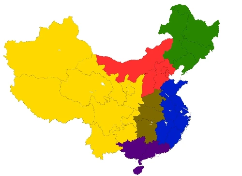
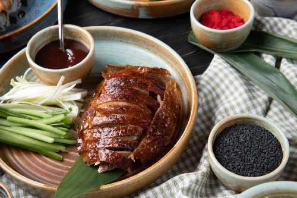
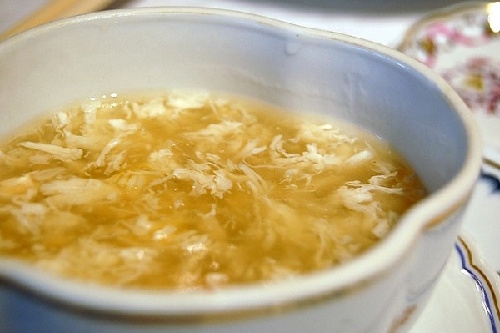
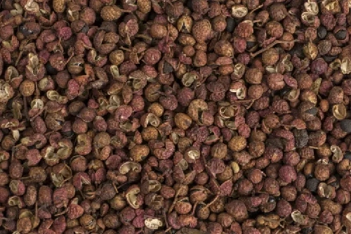
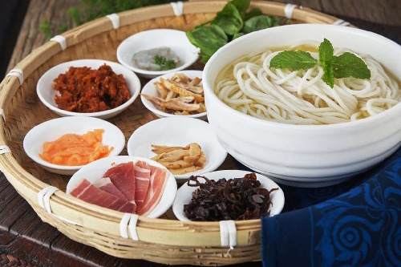
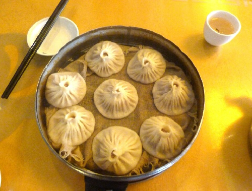

La disponibilidad de los alimentos y las tradiciones de cada región fomentaron la diversificación de las comidas a través del país. Los principales estilos culinarios son:
Estilo del Norte (Pekín)
Estilo del Este (Shanghai)
Estilo del Oeste (Sichuan)
Estilo del Centro (Yunnan)
Estilo del Sur o de Cantón
Estilo oficial (Mandarín)
Las regiones tienen cosas en común como la carne de cerdo y el huevo, pero cada una tiene tradiciones y especialidades que las distingue de las otras. El estilo más conocido en occidente es el del sur o de cantón. El estilo oficial se utiliza para banquetes formales; se prepara un surtido de platos mas representativos o refinados del conjunto de cocinas regionales.

Estilo del Norte
El estilo del norte es austero y rígido. Se come carne (principalmente de cerdo), al estilo kao, es decir, al horno o asada en una larga coción. Se comen pastas a base de harinas (no de arroz). No se comen muchas aves o verduras, pero a pesar de esto, el plato más conocido de la región es el plato laqueado que suele ser acompañado por tallarines y mermelada de porotos.

Pato laqueado a la pekinesa
Estilo del Este
El estilo del este, se basa en el consumo de pescado y marisco; como acompañamiento, se utiliza el arroz hervido o el juk, una especia de puré de arroz. El condimento más utilizado es la salsa de soja; los platos son sabrosos y aromáticos, aunque no demasiado picantes. Las verduras se utilizan mucho, servidas como acompañamiento en casi todas las comidas. Se utilizan distintos métodoos de cocción: al vapor, a la brasa, salteado en la sartén o en fritura. Los platos principales consisten en una serie de raviolis cocidos al vapor, albóndigas y tallarines de harina de trigo. El plato más conocido es la sopa de nidos de golondrina.

Sopa de nido de golondrina
Estilo del Oeste
Este estilo es caracterizado por sus especias. La propia región (Sichuan) le da su nombre a un tipo de especia. Los alimmentos son aromatizados, en ocasiones picantes y se utilizan los hongos a menudo.

Pimienta Sichuan
Estilo del Centro
El estilo del centro es especialmente picante. La cocina de esta región es densa y cargada, y utiliza distintas pimientas, guindilla, ajo, cebolla y jengibre. Abunda en especialidades, ya que puede contar con una gran variedad de productos locales. Se come mucho pescado, en general seco.

Fideos "Cruzar el puente" plato típico de Yunnan
Estilo del Sur
El estilo del sur es el más celebre y conocido en occidente. La cocina es poco compleja y es más variada que las demás. Es una región subtropical rica en pescado, marisco, verdura y fruta. El arroz ocupa el lugar principal seguido cerca por las sopas. Se acompaña por salsas liquidas transparentes y verduras crujientes. No se usa mucho la carne y se prefiere el pescado y el marisco. El método más usado de cocción es el chao: freir removiendo sin cesar los distintos ingredientes en un wok con poco aceite y al fuego vivo.

Tangbao (dim sum)
Estilo Oficial
Este no es un estilo regional, pero es importante hablar de el. Es el estilo utilizados en los banquetes formales y denominado mandarín. Consiste en un surtido de platos que se consideran los más representativos, o refinados, del conjunto de cocinas regionales.